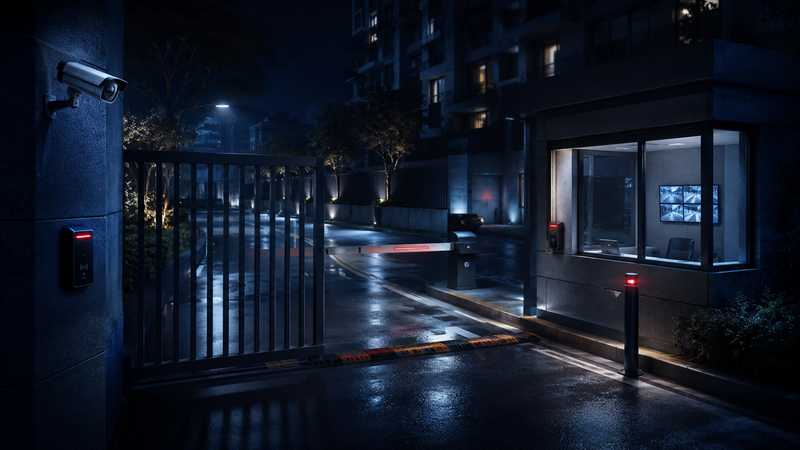
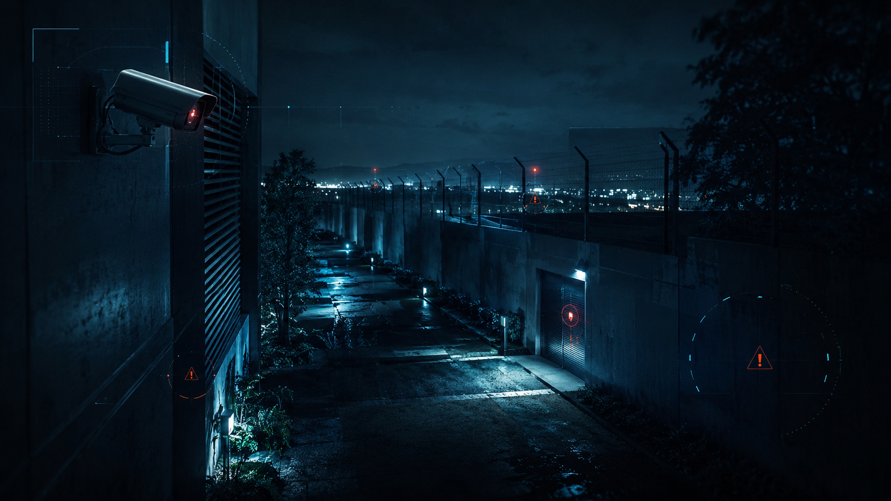
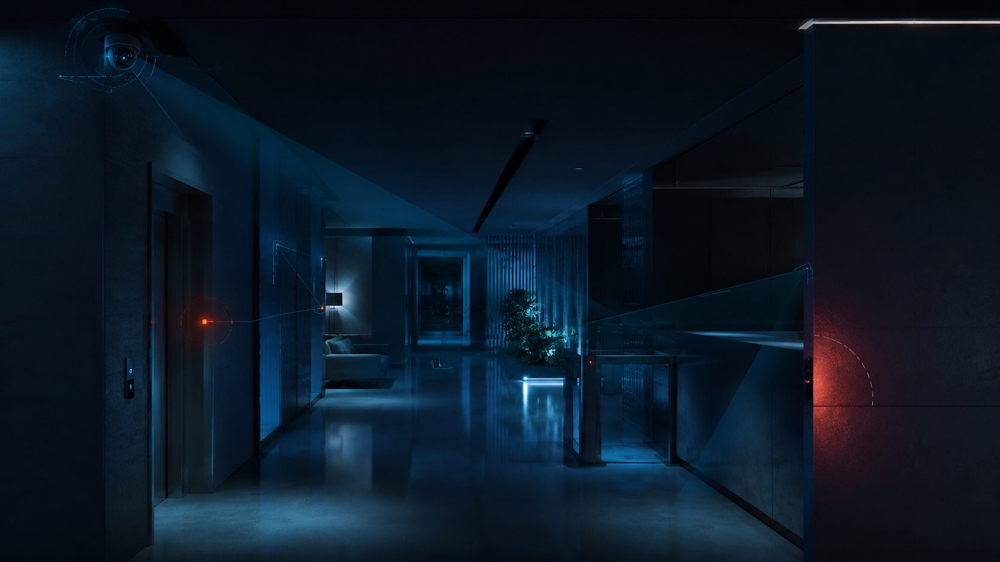
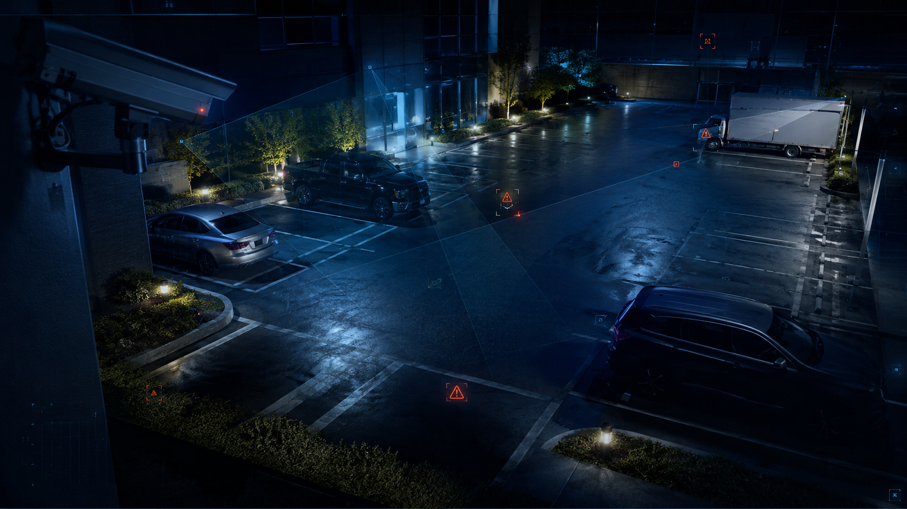
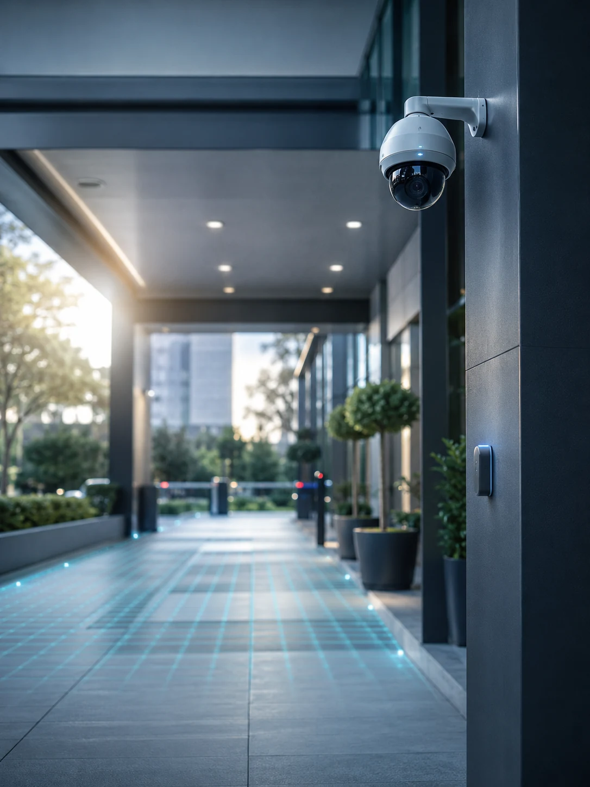
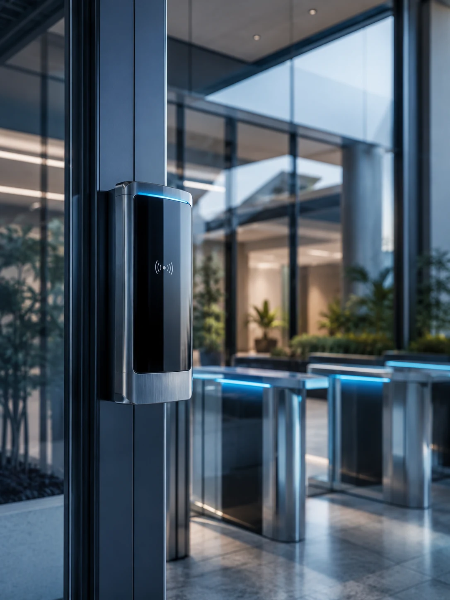
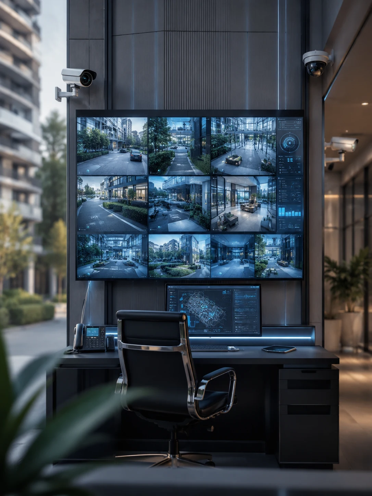
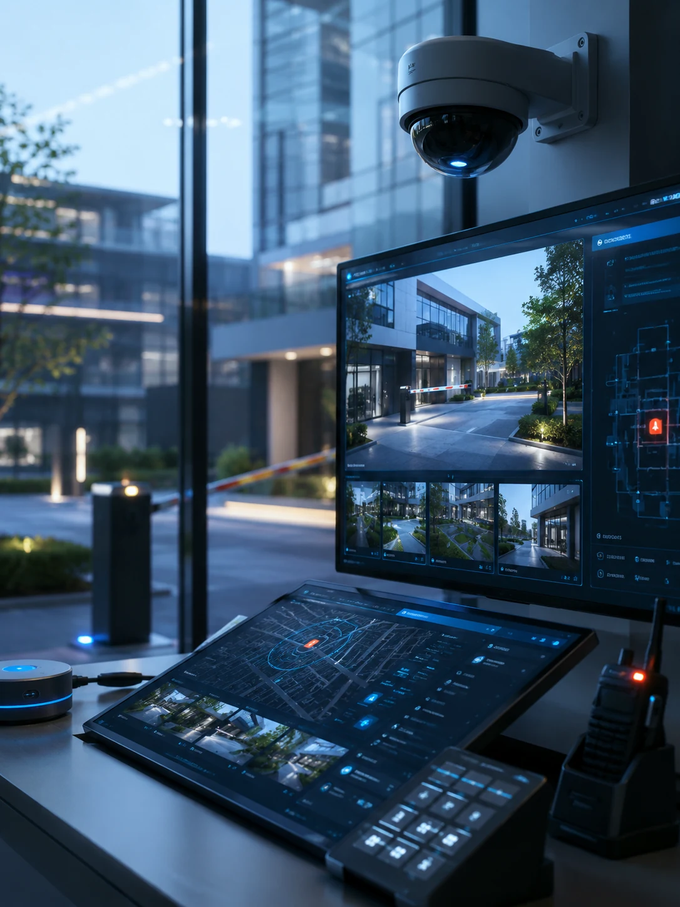
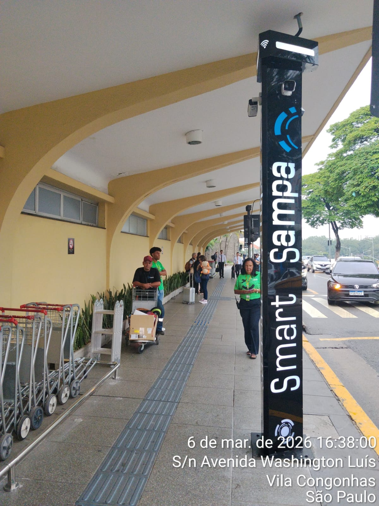

01
Acessos sensíveis
Entradas e saídas sem critério claro dificultam a leitura de quem circula pelo ambiente.
Avaliamos acessos, perímetro, áreas internas e rotina do ambiente para montar um projeto de CFTV, controle de acesso, alarmes e monitoramento sob medida.
Antes de indicar equipamentos, avaliamos como pessoas, veículos, acessos e alertas circulam pelo ambiente.
Onde a segurança costuma falharEntradas, perímetro, áreas internas e áreas externas precisam ser analisados como partes do mesmo sistema. É nessa leitura que o projeto deixa de ser uma lista de equipamentos e passa a responder ao risco real.

Entradas e saídas sem critério claro dificultam a leitura de quem circula pelo ambiente.

Limites pouco monitorados deixam aproximações e tentativas de acesso sem antecipação.

Corredores, áreas comuns e pontos de passagem exigem visibilidade sem criar operação confusa.

Estacionamentos, recuos e circulação externa precisam combinar presença visual e resposta rápida.
A tecnologia entra depois da leitura do ambiente, não antes.
Arquitetura operacionalA SP Security organiza câmeras, acessos, sensores, alarmes e monitoramento em uma lógica de operação: entender o risco, desenhar o projeto, integrar os recursos e acompanhar o ambiente em uso.
Ver método de trabalho
Avaliamos acessos, perímetro, circulação, rotina e pontos cegos antes de definir a solução.

Definimos recursos, posições, permissões e prioridades conforme o risco real de cada área.

Conectamos CFTV, controle de acesso, sensores, alarmes e registros em uma operação coerente.

Alertas, evidências e acompanhamento ajudam a agir com mais clareza quando algo exige atenção.
Antes de indicar tecnologias, entendemos o cenário, os riscos e a rotina do ambiente.
O métodoA SP Security organiza cada etapa do processo para transformar a leitura de risco em uma solução coerente, integrada e aplicável ao contexto do cliente.
Rotina e áreas críticas
Pontos cegos e prioridades
Integração e posicionamento
Conexão e uso orientado

Presença preventiva e apoio ao monitoramento em área pública.

Acompanhamento visual de circulação, acessos e pontos vulneráveis.
Múltiplos ângulos para verificação de ocorrências.

Mais visibilidade em entradas e áreas comuns.

Equipamento posicionado conforme fluxo, visibilidade e necessidade de resposta do local.
Presença visual, orientação e posicionamento em área de circulação.
Leitura do ambiente em condição de menor iluminação.
Registro da solução instalada e posicionada no fluxo do local.
Recorte visual para ampliar contexto e resposta operacional.
O mesmo projeto não serve para todos os ambientes.
AplicaçõesVeja como o diagnóstico muda conforme circulação, acesso, exposição externa e rotina de cada local.
Avaliar ambienteControle de entradas, circulação e áreas comuns com monitoramento integrado.
Fale com um especialista da SP Security para iniciar uma análise objetiva de acessos, perímetro, rotina e pontos cegos.